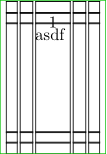
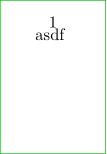
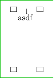

Contents
Summary
Settings
| \showframe[...,...][...,...] | |
| [...,...] | top header text footer bottom |
| [...,...] | leftedge leftmargin text rightmargin rightedge |
Description
In every case a green rectangle is drawn around the page edge. To change the color of that rectangle, use e.g. \definepalet[layout][page=blue].
If you define a background eg. in a layer and want to preserve its output, you have to put the \showframe command before those \setupbackgrounds commands in your document, because \showframe is merely a wrapper around several calls to \setupbackgrounds so it may alter your layer's background.
The table below shows what the horizontal and vertical components of \showframe highlight. The table's rows and columns ought to be transposed, really - currently the [header] is in the leftmost column, instead of the topmost row - but the table wouldn't fit that way round.
The examples all use the same page design:
\definepapersize[A11][height=26mm, width=18mm] \setuppapersize[A11] \setuplayout[ backspace=6mm, width=6mm, marginleft=2mm, marginright=2mm, leftedge=2mm, rightedge=2mm]
| (one argument) | [header] | [text] | [footer] |
|---|---|---|---|
[leftedge]
|
[header][leftedge]
|
[text][leftedge]
|
[footer][leftedge]
|
[leftmargin]
|
[header][leftmargin]
|
[text][leftmargin]
|
[footer][leftmargin]
|
[text]
|
[header][text]
|
[text][text]
|
[footer][text]
|
[rightmargin]
|
[header][rightmargin]
|
[text][rightmargin]
|
[footer][rightmargin]
|
[rightedge]
|
[header][rightedge]
|
[text][rightedge]
|
[footer][rightedge]
|
Examples
Framing all areas
-
\definepapersize[A11][height=26mm, width=18mm] \setuppapersize[A11] \setuplayout[ % paperwidth - width - backspace % = 6mm outer space top=2mm, bottom=2mm, backspace=6mm, width=6mm, marginleft=2mm, marginright=2mm, leftedge=2mm, rightedge=2mm] \showframe \starttext asdf \stoptext
- 
Framing only the page
-
\definepapersize[A11][height=26mm, width=18mm] \setuppapersize[A11] \setuplayout[ % paperwidth - width - backspace % = 6mm outer space backspace=6mm, width=6mm, marginleft=2mm, marginright=2mm, leftedge=2mm, rightedge=2mm] \showframe[] \starttext asdf \stoptext
- 
Framing part of the page
-
\definepapersize[A11][height=26mm, width=18mm] \setuppapersize[A11] \setuplayout[ backspace=6mm, width=6mm, marginleft=2mm, marginright=2mm, leftedge=2mm, rightedge=2mm] \showframe[header, footer][leftmargin, rightmargin] \starttext asdf \stoptext
- 
Notes
See also
- page-run.mkiv
- \setupbackgrounds
- \showsetups to print all the of the layout's various dimension variables.